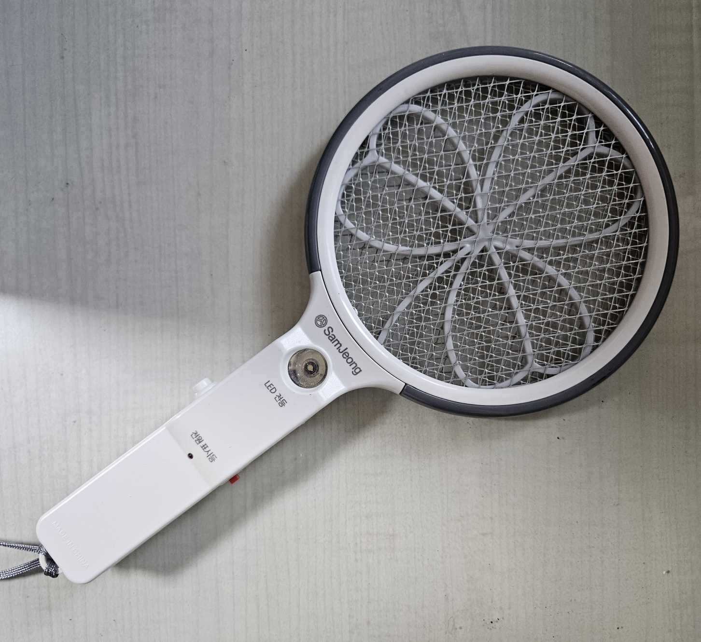
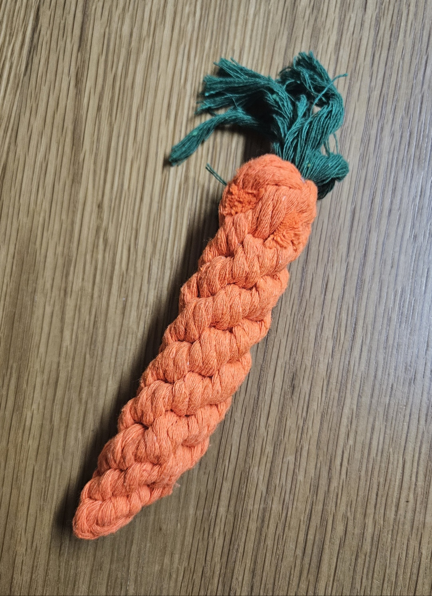
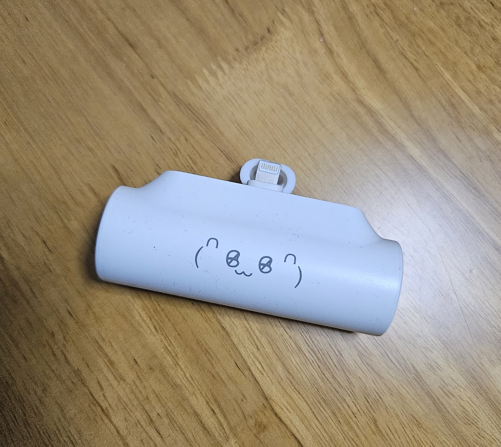
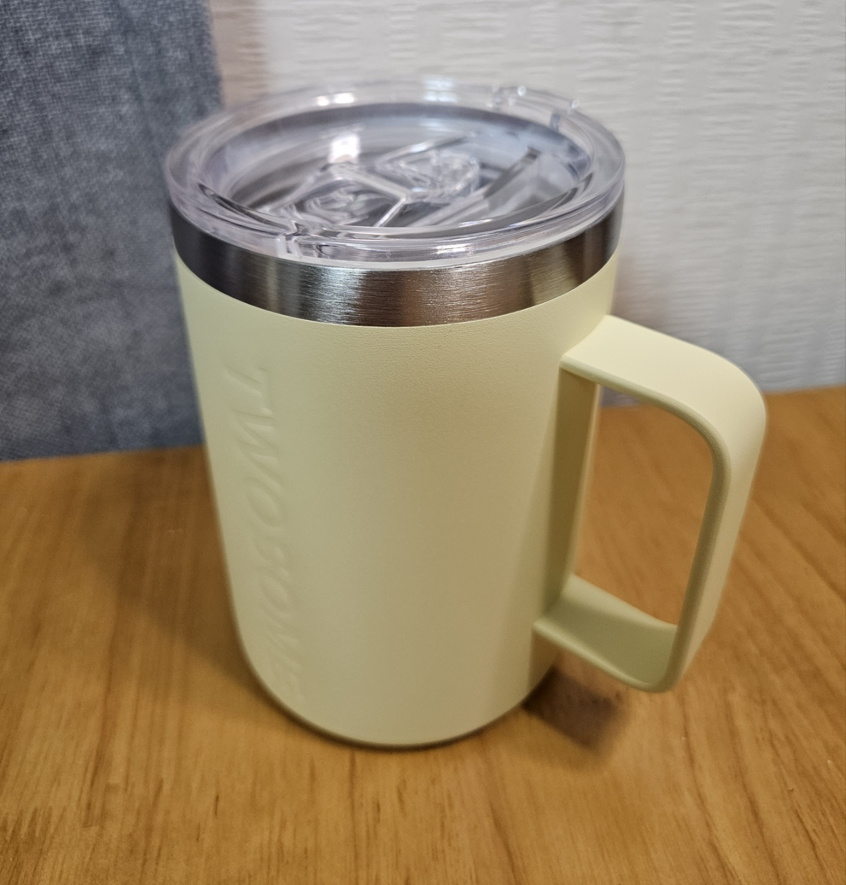
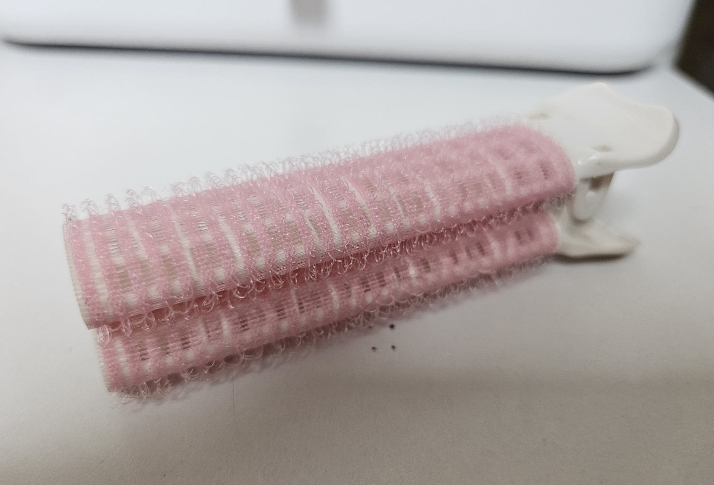
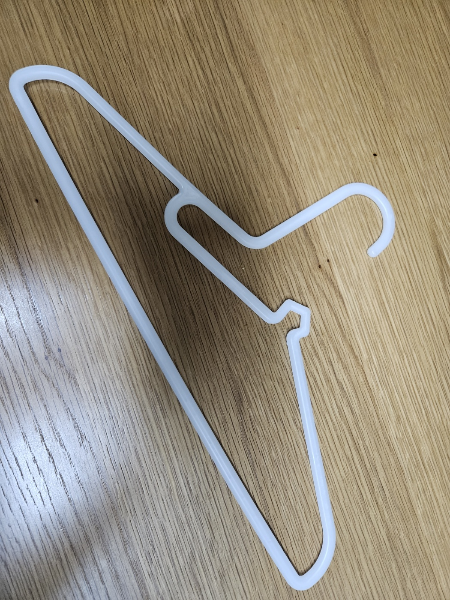
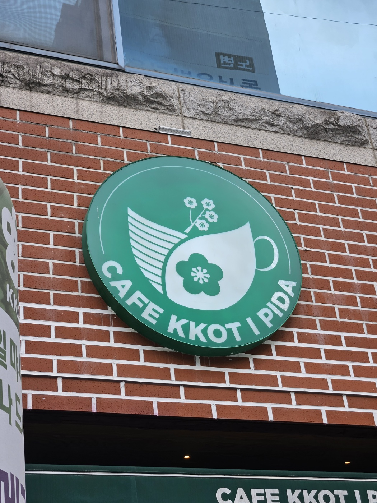
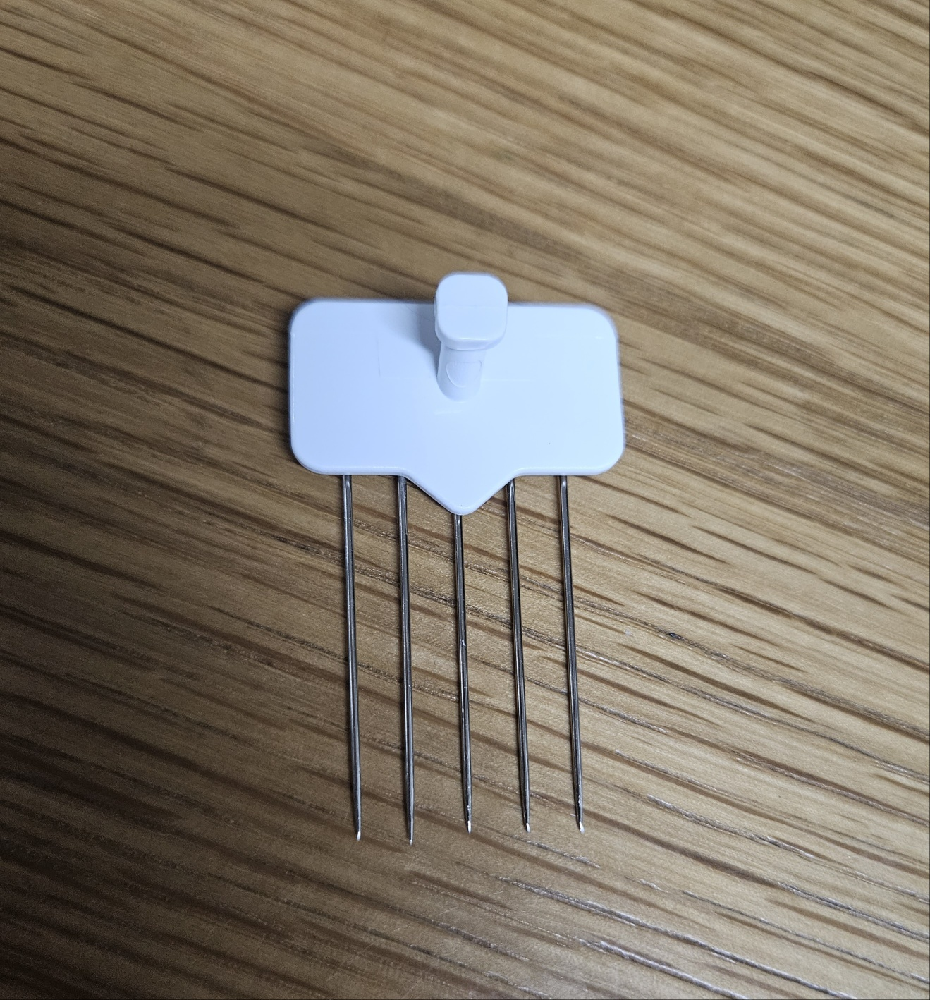

물감통

하나의 형태로 된 물감통과 다른 2개로 분리된 형태로 사용자가 사용하기에 더 편리하도록 만드는 디자인이다. 물감통의 윗부분에 4개의 사이즈가 다른 구멍을 만들어 사이즈가 다른 붓을 알맞게 넣을 수 있게 만들었다. 또한 손잡이 부분에도 구멍을 내어 손잡이가 방해되지 않게 만든 실용성 있는 부분이 있다.
전기 파리채
보통의 파리채보다 작게 제작한 것과 전기가 통하는 부분의 세잎 클로버 형태를 의도가 없이 넣지 않고 야광으로 만듦으로써 벌레가 밤에 나타나 죽일 수 있다. 밤에도 전기 파리채가 잘 보일 수 있도록 했다. 전원 버튼을 키면 바로 전기가 통하도록 만들지 않고 사용자가 버튼 2개를 동시에 눌러 사용하게 만드는 안전성을 높인 디자인이다.
강아지 장난감
강아지가 가지고 놀 수 있도록 만든 장난감으로 강아지의 치아 안전을 고려하여 딱딱하지도 물렁하지도 않게 만들었다. 밧줄 같은 꼬여진 형태가 뭉쳐있게 디자인하여 강아지의 치석을 효과적으로 제거하는 것에 도움을 준다. 당근의 잎 부분은 가다으로 디자인을 함으로써 주황 당근과 느낌이 다게 더 다양한 형태로 놀 수 있다.
휴대용 충전기
보통의 본체와 긴 전깃줄로 이루어진 충전기랑 다르게 충전하는 시스템이 작은 형태 안에 들어가게 만들어 사람들이 휴대용으로 들고 다닐 수 있는 실용성을 높였다. 충전하는 재교 부분이 줄로 이루어지지 않고 본체와 일체형으로 만들어 효율성을 잡아 디자인 하였다.
텀블러
산뜻한 연한 노란색의 색상과 텀블러지만 머그컵 모양으로 디자인해 겉으로 봄으로도 무엇인지 알 수 있다. 세로, 가로 가 모두 적당한 사이즈로 제작해 휴대성을 높였다. 텀블러의 뚜껑을 보통의 텀블러와 같이 돌려서 결합하지 않고 고무를 더해 내용물이 새지 않음과 동시에 자세한 부분을 놓치지 않았다.
구르프
모두가 알고 있는 원기둥 형태로 제작하지 않고 납작한 타원형이 2개가 연결되어 있는 집게 모양의 구르프를 디자인함으로써 공간을 차지하지 않게 만들었다. 사용자가 원하는 결과물을 자신이 쓰는 방향에 따라 다르게 만들어 낼 수 있도록 하여 다양성을 보여준다.
옷걸이
단순히 옷, 수건 만을 걸 수 있는 옷걸이 같지 않은 여러 각도의 각을 이용하여 옷 이외의 양말, 속옷, 손수건 등 작은 형태의 제품들을 걸 수 있도록 만들었다. 다른 형태의 옷걸이를 구매하지 않도록 만드는 활용성을 높인 부분이 있다.
로고
컵 모양 중간에 꽃 이모티콘을 넣어 <카페, 꽃이 피다> 카페명을 인식시켜주는 요소를 한 번 나타냈다. 다음 차례로 컵 위에 가지에 핀 꽃을 넣음으로써 연기를 연상시킴과 동시에 카페명을 그대로 나타내어 두 가지 의미를 잡은 디자인이다.
마사지기

마사지 기구로 작은 형태로 만든 실용성과 일반 원기둥 모양과 차별을 두어 뿔 모양의 모서리를 3개로 만들어 긴 부분으로 나온 형태 부분은 쉽게 잡을 수 있도록 만들었다.다른 두 부분은 얇은 두께 제작하여 섬세하게 마사지를 할 수 있도록 디자인 하였다.
벽걸이
작은 형태의 벽에 꽂을 수 있는 벽걸이로 얇고 긴 형태의 핀 이 합쳐져 있어 무시공으로 벽의 최대한 훼손하지 않을 수 있게 제작했다. 하나의 핀이 아닌 5개의 핀을 붙여 얇은 핀이 무거운 무게도 버틸 수 있게 내공성을 더 했다.